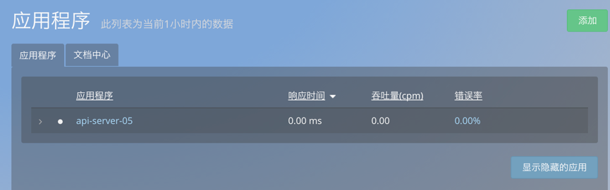

部署无数据问题
Java
1.如何对指定 jar 包进行监控
在 jar 的启动命令中执行如下命令，即可完成对指定 jar 的监控：
java -javaagent: oneapm.jar -jar *.jar
注意：
-javaagent: 后面跟 oneapm.jar 的绝对路径
jar 后面跟要监控的 jar 的路径
这种方式同时支持，使用 spring boot 内嵌 Web 容器，并将整个应用打包成 jar 包的监控
2.Java Agent 更新方法
OneAPM Java Agent 更新，无需卸载 Agent 探针，再重新部署。您只需遵循以下步骤，来完成 Agent 的更新：
在安装步骤页面，下载 Java 最新版本 Agent。
解压出 OneAPM_java_agent_x.x.x.zip 中的 OneAPM目录。
替换掉原有版本的 OneAPM，至最新版本。
oneapm.properties里的内容需要按照之前的内容重新配置下，建议更新前，先备份下 OneAPM/oneapm.properties
所有工作配置完后，重启应用服务器
查看新版本的 Agent 是否可以正常地向 OneAPM 发送数据。
3.如何使用OneAPM的 extensions 拓展功能
- 如何对不支持的同步框架做扩展配置，请查看OneAPM拓展功能使用文档
4.内网服务器如何部署OneAPM
- 请查看内网如何部署OneAPM的文档说明；
5. windows下的Tomcat 部署oneapm后看不到数据;
- 回答:首先查看有没有／OneAPM／logs目录，如果不存在，就是oneapm就是没有部署成功，首先查看 tomcat bin/catalina.bat 脚本中 JAVA_OPTS="-Xmx1024m -Xms512m"中的设置，然后 设置为JAVA_OPTS="-Xmx1024m -Xms512m -javaagent:/path/to/oneapm.jar" 然后重启tomcat，可以解决你的问题。注意：-javaagent:后面跟安装oneapm.jar的绝对路径；
6. windows 启动tomcat后可以看到／OneAPM/logs，看不到oneapm数据；
回答：遇到这种情况，排查方法如下：
1.排查网络是否跟oneapm正常打通，执行命令 telnet tpm.oneapm.com 443 或者 ping tpm.oneapm.com，如果不通请检查网络环境，并修复，确认可以跟oneapm打通；
2.排查服务器的时间是否为北京时间东八区的时间，如果不是请更新下服务器的时间跟北京东八区的时间保持一致；
3.打开并检查／OneAPM/oneapm.properties文件配置，设置 ssl = true；host = tpm.oneapm.com；port = 443；
4.检查 tomcat 根目录下是否有temp目录，如果没有请手动创建temp目录；例如：
➜ apache-tomcat-8.0.28 ls -l total 14896 -rw-r--r--@ 1 qinheng staff 58068 Oct 7 19:26 LICENSE -rw-r--r--@ 1 qinheng staff 1489 Oct 7 19:26 NOTICE drwxr-xr-x@ 8 qinheng staff 272 Nov 26 23:13 OneAPM -rw-r--r--@ 1 qinheng staff 7530606 Nov 27 09:56 OneAPM.zip -rw-r--r--@ 1 qinheng staff 6913 Oct 7 19:26 RELEASE-NOTES -rw-r--r--@ 1 qinheng staff 16682 Oct 7 19:26 RUNNING.txt drwxr-xr-x@ 26 qinheng staff 884 Nov 26 23:26 bin drwxr-xr-x@ 11 qinheng staff 374 Nov 26 23:28 conf drwxr-xr-x@ 26 qinheng staff 884 Nov 26 23:20 lib drwxr-xr-x@ 13 qinheng staff 442 Nov 27 10:02 logs drwxr-xr-x@ 9 qinheng staff 306 Nov 27 21:50 temp drwxr-xr-x@ 10 qinheng staff 340 Nov 27 21:50 webapps drwxr-xr-x@ 3 qinheng staff 102 Nov 26 23:28 work ➜ apache-tomcat-8.0.28
注意：Tomcat根目录下必须要有temp目录；
7.Java开发的 jar包程序 应该如何使用oneapm进行监控？
回答：jar包应用根据jar的启动命令加入启动参数 －javaagent:/full/path/to/oneapm.jar ， 例如： 1.通过 执行命令 java -jar test.jar 启动jar程序，想使用oneapm来监控jar程序，正确的执行命令是 java －javaagent:/full/path/to/oneapm.jar -jar test.jar
2.通过脚本启动jar 程序，脚本模版如下：
source /etc/profile cd 'dirname $0' cmd="java -Xms512m -Xmx2048m -XX:PermSize=256m -jar test.jar" exec ${cmd} echo "execute test.jar finish......"
正确引入 oneapm.jar 方式 脚本应修改为：cmd="java -Xms512m -Xmx2048m -XX:PermSize=256m －javaagent:/full/path/to/oneapm.jar -XX:PermSize=256m -XX:MaxPermSize=256m -jar test.jar"
注意：－javaagent:后面跟安装oneapm.jar的绝对路径；
8.有/OneAPM/logs/目录，网络和时间都正确，看不到oneapm数据；
回答：检查／OneAPM的权限，保证／OneAPM／目录及目录下的文件有执行的权限，再重启启动tomcat；
例如：➜ apache-tomcat-8.0.28 ls -l OneAPM total 11864 drwxrwxrwx@ 42 qinheng staff 1428 Aug 27 02:50 extensions drwxr-xr-x@ 25 qinheng staff 850 Aug 27 10:51 lib drwxr-xr-x 3 qinheng staff 102 Nov 26 23:13 logs -rw-r--r--@ 1 qinheng staff 6057639 Aug 27 10:51 oneapm.jar -rw-r--r--@ 1 qinheng staff 13679 Nov 26 23:10 oneapm.properties ➜ apache-tomcat-8.0.28
9.Centos下的Tomcat 部署oneapm并重启，看不到oneapm数据；
- 回答：执行 ps aux |grep oneapm 命令，查看oneapm进程是否存在，如果没有，检查tomcat 容器，是否在启动脚本里配置过 VM参数，例如：JAVA_OPTS="-Xmx1024m -Xms512m " ，如果有应修改为 JAVA_OPTS="-Xmx1024m -Xms512m -javaagent:/path/to/oneapm.jar" ；注意：-javaagent:后面跟安装oneapm.jar的绝对路径；
10.执行 java -jar oneapm.jar 后 报错：”com.blueware.monitor ERROR: init charset error， using default encoding in Strings utf-8“；
- 回答：oneapm默认使用的utf-8跟你的tomcat的默认编码格式不一致导致的错误，这个错误可以忽略，不影响oneapm的使用；
11.部署oneapm后，重启应用服务器后报错"Error bootstrapping oneapm agent:java.lang.RuntimeException: java.io.IOException: No such file or directory"，是什么原应啊？
- 回答：这个错误是因为，tomcat 目录缺少 temp目录，手动创建temp目录，再重启tomcat就不再会有这个报错；
12.错误信息”中没有 Sample Stack Trace;
- 回答：当错误被快速重复抛出，基于性能的考虑，Java 编译器可能会优化掉 Sample stack trace 。若要禁用该优化，您可以在 JVM 参数中加上：
-XX:-OmitStackTraceInFastThrow;
13.重启应用服务器后抛出 Error opening zip file: oneapm.jar ；
- 回答：原因：Agent jar 包的访问路径在 -javaagent JVM 选项中是完全限定的。如果没有正确地指定路径，该错误会在应用程序服务器启动时抛出，并且 JVM 也会退出运行。
解决办法：指定到 -javaagent 选项中 oneapm.jar 文件的完整路径。例如，如果 oneapm.jar 文件是在 Tomcat 主目录 /home/tomcat 中的 OneAPM 目录下，该选项应该以如下方式指定：-javaagent:/home/tomcat/oneapm/oneapm.jar 注意：-javaagent:后面跟oneapm.jar安装的绝对路径;
14.重启 Tomcat 后，日志报错，：“blueware 1 ERROR: license_key is expired in the config， not starting BlueWare Agent”；
- 回答：原因：License 许可过期。
解决方法：1.重新登陆 OneAPM 生成 License Key；2.将 License Key 复制并写入到探针的 oneapm.properites 文件中；3.重启 Tomcat；
15.Dubbo框架开发的jar程序，看不到数据；
- 请联系OneAPM技术支持
16.如何打通Java应用和PHP应用的相互打通；
- 解决办法：
- 1.打开 /OneAPM/oneapm.properites
- 2.找到 cross_application_tracer.internal_host 变量，如果没有就手动添加此变量
- 3.变量值设置成 cross_application_tracer.internal_host = 主机IP，主机IP
- 4.重启应用服务器
17.如何开启 OneAPM 日志；
- 1.打开：/OneAPM/oneapm.properties
- 2.设置： audit_mode = true log_level = finest
- 3.生效方式：动态生效 注意：搜集日志10分钟后，日志建议关闭，避免产生大量日志占用磁盘资源，原因：日志是为了分析错误的，如果没有异常建议日志关闭。
18.如何关闭 OneAPM 日志；
- 1.打开：/OneAPM/oneapm.properties
- 2.设置： audit_mode = false log_level = off
- 3.生效方式：动态生效
19.拓展功能使用方法；
- 1.配置 extensions的配置文件 test.xml,test.xml 的具体配置请参考 OneAPM 拓展功能使用文档；文档链接：http://www.oneapm.com/docs/ai/qa/java/extensions_help.html
- 2.test.xml 文件拷贝到 /OneAPM/extensions/ 目录下
- 3.重启web容器生效
提示：
- 1.test.xml 文件名称你可以自定义，比如：netty.xml，api.xml 都可以自定义
- 2.如果test.xml 文件中配置方法类的调用逻辑是异步调用，请在pointcut标签中增加 transactionStartPoint="true" 属性
例如：
<?xml version="1.0" encoding="UTF-8"?> <extension xmlns="https://blueware.com/docs/java/xsd/v1.0" xmlns:xsi="http://www.w3.org/2001/XMLSchema-instance" name="org.webservice" version="1.8"> <instrumentation> <pointcut transactionStartPoint="true"> <nameTransaction/> <className>com.etc.webbookshop.service.impl.UserServiceImpl</className> <method> <name>getAllUser</name> <parameters> <type>java.util.List</type> </parameters> </method> </pointcut> </instrumentation> </extension>20.应用程序的名称如何修改；
1.打开：/OneAPM/oneapm.properties
- 2.设置： app_name = api-server-05
- 3.生效方式：重启 Web 容器 【比如：tomcat，jetty 等】
- 4.修改后的效果：登陆 oneapm 账号后应用程序列表中显示的名称，就是刚才设置的 app_name = api-server-05，如下图：
